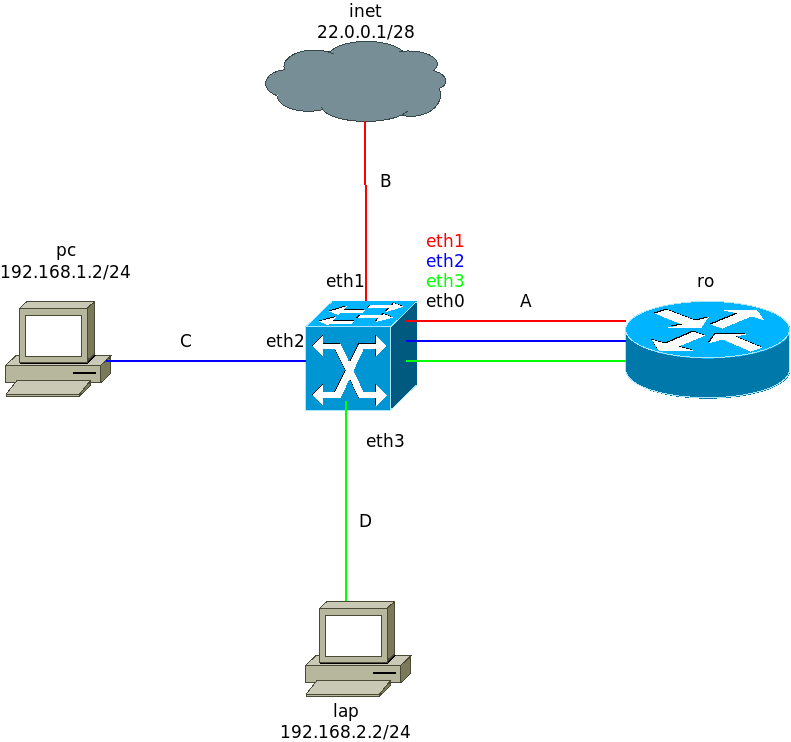
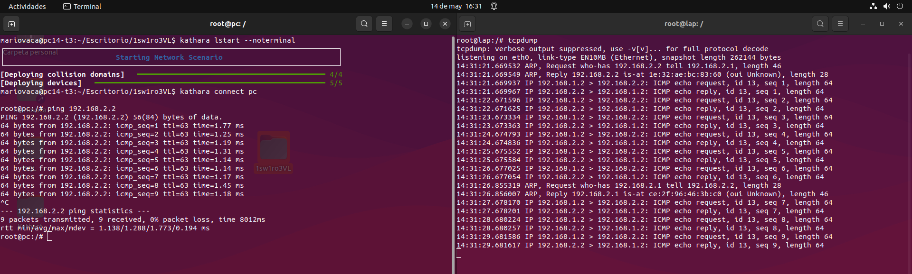
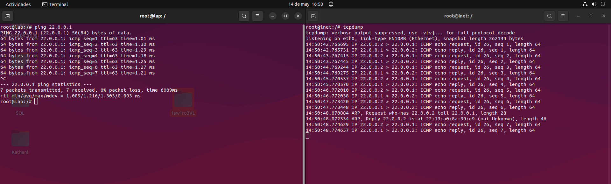

Mario Valiño Canalejas 07/05/2025
Memoria Kathará #3.



Lo impide la no configuración del enmascaramiento, se soluciona con el siguiente comando en ro.
iptables -t nat -A POSTROUTING -o eth0.30 -j MASQUERADE